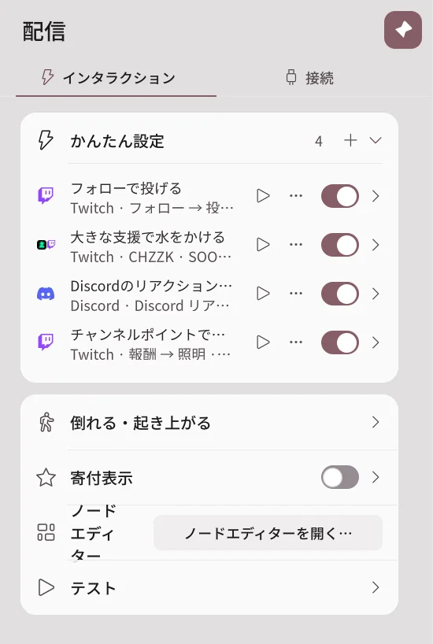
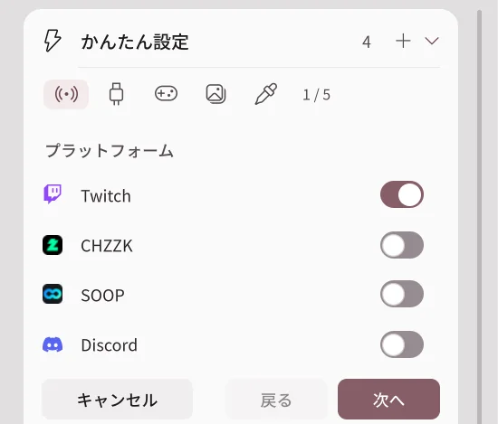
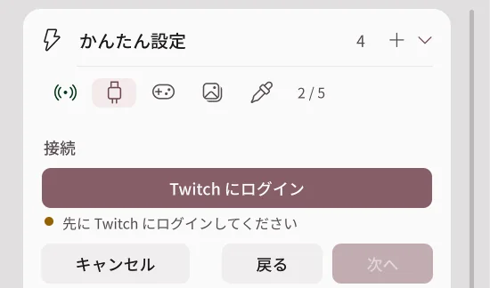
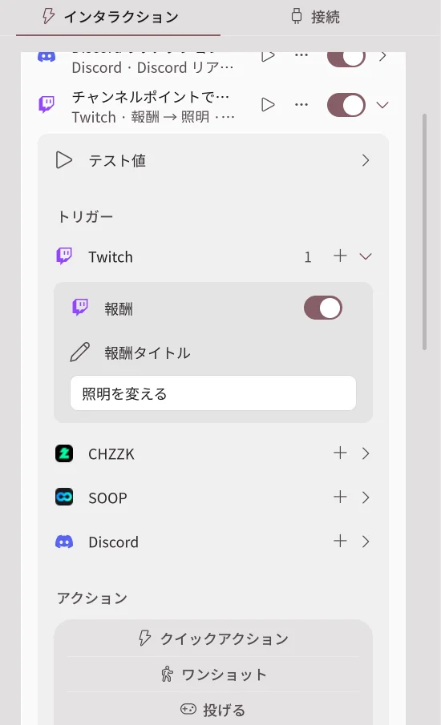
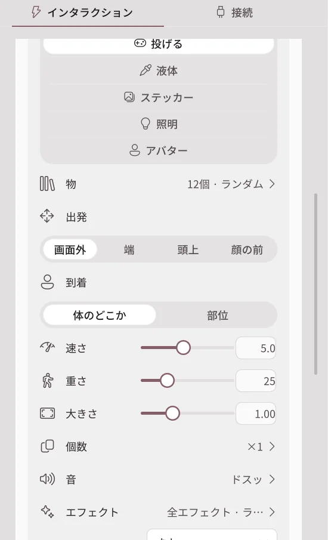

かんたん設定
2.2.0 で追加された機能です。2.1.2 以前にはありません。
かんたん設定は、「イベントが届いたらこう反応する」を1行で作るリストです。たとえば、フォローされたら物を投げ、1万ウォン以上のドネーションが届いたらアバターに水をかけます。配信連携の機能なのでProが必要で、現在はベータです。
配信 → インタラクションのかんたん設定カードで作ります。

| 行に表示されるもの | 意味 |
|---|---|
| プラットフォームのアイコン | この項目が受け取るプラットフォームです。 |
| 名前 | 項目の名前です。最初は「ルール 1」のように付きます。 |
| トリガー → アクション | どのイベントで何をするかの要約です。 |
| ▶ | 偽のイベントを1回送って、すぐに試します。 |
| ⋯ | 名前を変更・複製・オン/オフ・削除のメニューです。行を右クリックしても開きます。 |
| スイッチ | 項目をオン・オフします。 |
新しい項目を作る
- かんたん設定カードの + を押します。
- プラットフォームのステップで、イベントを受け取るプラットフォームをオンにします。複数を同時にオンにできます。
- 次へを押します。
- 接続のステップで、そのプラットフォームにログインしているか確認します。ログインしていなければ、ログインボタンで接続します。
- 投げる・ステッカー・液体のステップで、それぞれどのイベントで実行するかを選びます。イベントを選ばなかったステップは作りません。
- 作成を押すと、リストに項目が追加されます。


空欄にした項目は、標準の物・音・エフェクト・ステッカーのフォルダーで埋められ、すぐに動作します。細かい値は、作成後に項目を開いて変更します。
例
| やりたいこと | トリガー | アクション |
|---|---|---|
| フォローされたら物を投げる | Twitchのフォロー | 投げる |
| 1万ウォン以上のドネーションで水をかける | CHZZK ドネーション、最小金額10000 | 液体 |
| スターバルーン100個以上で水をかける | SOOP スターバルーン、最小個数100 | 液体 |
| Discordの友達のリアクションで投げる | Discord リアクション | 投げる |
| チャンネルポイントで照明を変える | Twitchの報酬、報酬のタイトル | 照明 |
例の項目のアクション設定は、投げる・液体・倒れるで詳しく説明します。
項目を開く
行の右の矢印を押すと、項目が開きます。

トリガー
トリガーはプラットフォームごとにまとまっています。プラットフォームの横の + でトリガーを追加でき、1つの項目に複数のプラットフォームのトリガーを一緒に置けます。
| トリガー | 条件 |
|---|---|
| 報酬（Twitch） | 報酬のタイトルが同じチャンネルポイントの報酬 |
| チャット | メッセージに含まれている必要がある文字 |
| ビッツ・ドネーション・スターバルーン | 最小の金額・個数、最大の金額・個数 |
| サブスク | 新規・継続・ギフトのサブスク |
| Discord リアクション | 処理するリアクション、最小・最大個数 |
| Discord ミニゲームの結果 | ゲーム、ジャックポットのときだけ、最低限戻ったポイント |
テスト値を開くと、▶テストで送るニックネーム・金額・メッセージを決められます。
アクション

| アクション | できること |
|---|---|
| クイックアクション | クイックアクションを1つ実行します。 |
| ワンショット | ワンショットアニメーションを1回再生します。 |
| 投げる | 小道具をアバターに投げます。ドネーションの金額に応じて個数を増やせます。 |
| 液体 | 水やミルクなどの液体をかけます。 |
| ステッカー | 画像をアバターに貼ります。視聴者のプロフィール画像も使えます。 |
| 照明 | ライトを一時的にオン・オフしたり、色・明るさ・エフェクト・プリセットを変えたりして、決めた時間のあとに元に戻ります。 |
| アバター | トラッキングをオフ、ダンスをループ、ポーズをしばらく適用します。 |
クールダウンと視聴者ごとの制限
| 項目 | できること |
|---|---|
| クールダウン(秒) | 1回実行してから次に実行できるまで待つ時間です。 |
| 視聴者ごと | 同じ視聴者のイベントにだけ、別にクールダウンをかけます。 |
| このルールを削除 | 項目を削除します。 |
| ノードエディターで開く… | この項目が作ったグラフをノードエディターで開きます。 |
テストと問題の確認
- ▶を押して、配信なしで項目を試します。
- 実際のイベントに反応しない場合は、プラットフォームの接続、項目のスイッチ、クールダウン、最小金額を順に確認します。
- それでも解決しない場合は、配信連携がうまくいかないときを確認し、エラーレポートを送ってください。